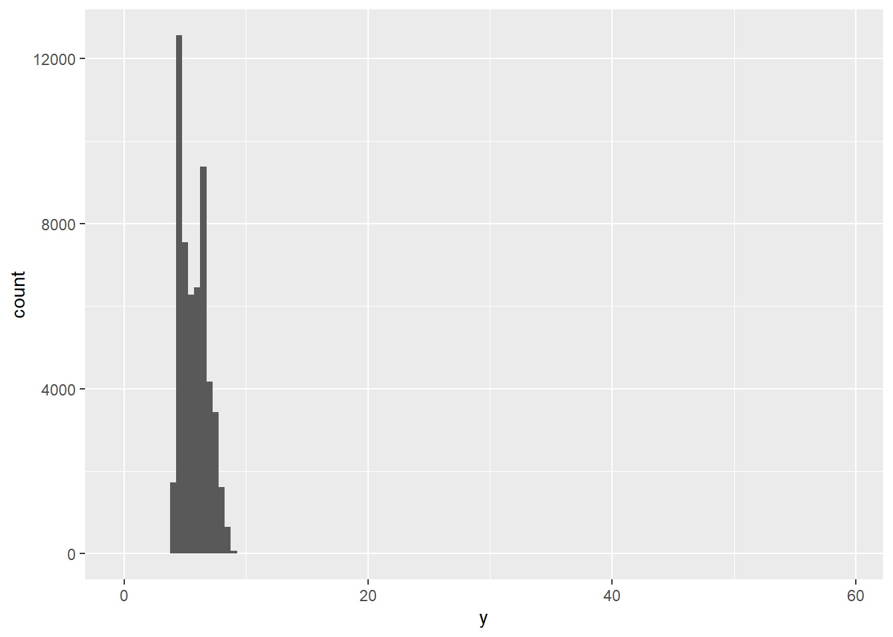
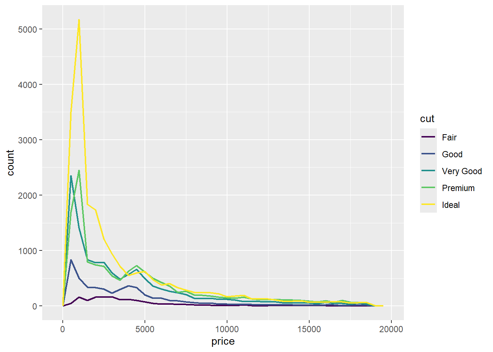
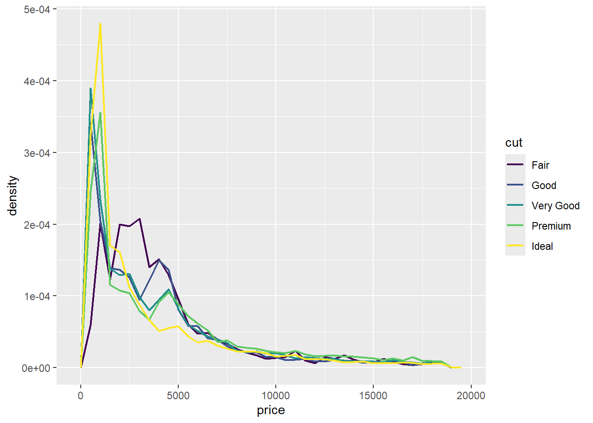
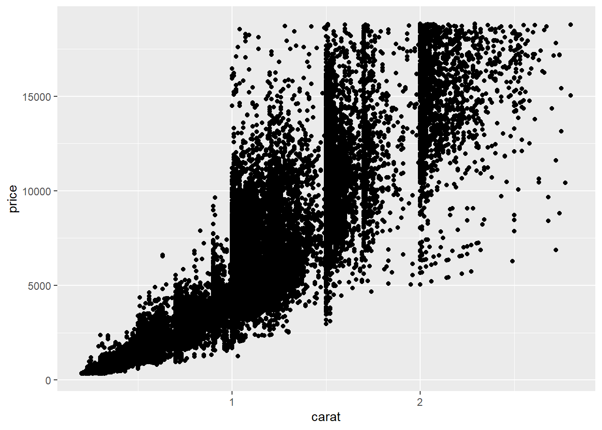
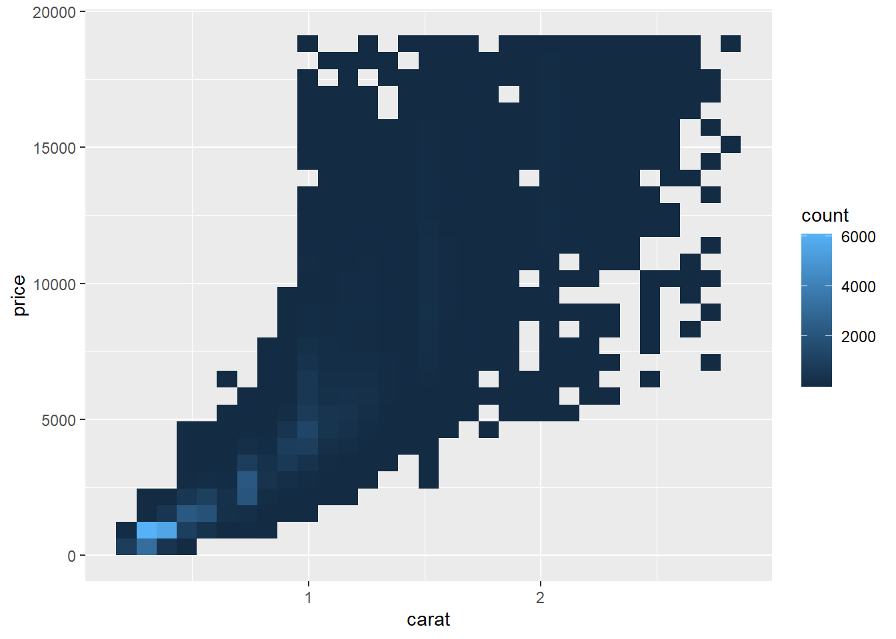

library(tidyverse)
library(ggplot2)
# Visualizing the carat from the diamonds dataset
ggplot(diamonds, aes(x = carat)) +
geom_histogram(binwidth = 0.5)
A sharp question or hypothesis can serve as a dimension reduction tool that can eliminate variables that are not immediately relevant to the question.
It’s usually a good idea to spend a few minutes to figure out what is the question you’re really interested in and narrow it down to be as specific as possible (without becoming uninteresting). One of the most important questions you can answer with an exploratory data analysis is: “Do I have the right data to answer this question?”
There is no universal rule about which questions you should ask to guide your research. However, two types of questions will always be useful for making discoveries within your data:
Sometimes the data will come in a very messy format, and you’ll need to do some cleaning and transformations.
The readr package is a nice package for reading in flat files very fast, or at least much faster than R’s built-in functions
Assuming you don’t get any warnings or errors when reading in the dataset, you should now have an object in your workspace, e.g. named “ozone”. It’s usually a good idea to poke at that object a little bit before we break open the wrapping paper. For example, you can check the number of rows and columns.
This is usually a safe operation in the sense that even with a very large dataset, running str() shouldn’t take too long.
You can examine the classes of each of the columns to make sure they are correctly specified (i.e., numbers are numeric, and strings are character, etc.).
This lets me know if the data were read in properly, things are properly formatted, and that everything is there. If your data are time series data, then make sure the dates at the beginning and end of the dataset match what you expect the beginning and ending time period are.
You can peek at the top and bottom of the data with the head() and tail() functions. Sometimes there’s weird formatting at the end or some extra comment lines that someone decided to stick at the end.
To do this properly, you need to identify some landmarks that can be used to check against your data. For example, if you are collecting data on people, such as in a survey or clinical trial, then you should know how many people there are in your study (i.e., in an ozone monitoring data system we can take a look at the Time.Local variable to see what time measurements are recorded as being taken.)
table(ozone$Time.Local)External validation can often be as simple as checking your data against a single number.Is the data are at least of the right order of magnitude (i.e., the units are correct)? or, is the range of the distribution roughly what we’d expect, given the regulation around ambient pollution levels?
Variation is the tendency of the values of a variable to change from measurement to measurement.
Every variable has its own pattern of variation, which can reveal interesting information about how that it varies between measurements on the same observation as well as across observations. The best way to understand a pattern is to visualize the distribution of the variable’s values.
Example:
library(tidyverse)
library(ggplot2)
# Visualizing the carat from the diamonds dataset
ggplot(diamonds, aes(x = carat)) +
geom_histogram(binwidth = 0.5)
Now that you can visualize variation, what should you look for in your plot? And what type of follow-up questions should you ask?
This histogram suggests several interesting questions:
Visualizations can also reveal clusters, which suggest that subgroups exist in your data. To understand the subgroups, ask:
In both bar charts and histograms, tall bars show the common values of a variable, and shorter bars show less-common values. Places that do not have bars reveal values that were not seen in your data. Now you can turn this information into useful questions:
Which values are the most common? Why?
Which values are rare? Why? Does that match your expectations?
Can you see any unusual patterns? What might explain them?
Let’s take a look at the distribution of carat for smaller diamonds.
Example:
smaller <- diamonds |>
filter(carat < 3)
ggplot(smaller, aes(x = carat)) +
geom_histogram(binwidth = 0.01)
This histogram suggests several interesting questions:
Visualizations can also reveal clusters, which suggest that subgroups exist in your data. To understand the subgroups, ask:
Outliers are observations that are unusual; data points that don’t seem to fit the pattern. Sometimes outliers are data entry errors, sometimes they are simply values at the extremes that happened to be observed in this data collection, and other times they suggest important new discoveries.
When you have a lot of data, outliers are sometimes difficult to see in a histogram. For example, take the distribution of the y variable from the diamonds dataset. The only evidence of outliers is the unusually wide limits on the x-axis.
Example:
ggplot(diamonds, aes(x = y)) +
geom_histogram(binwidth = 0.5) 
To make it easy to see unusual values:
coord_cartesian(ylim = c(0, 50))If you’ve encountered unusual values in your dataset, and simply want to move on to the rest of your analysis, you have two options.
Drop the entire row with the strange values:
Example:
diamonds2 <- diamonds |>
filter(between(y, 3, 20))This is not recommended because one invalid value doesn’t imply that all the other values for that observation are also invalid.
Instead, we recommend replacing the unusual values with missing values. The easiest way to do this is to use mutate() to replace the variable with a modified copy.
Example:
diamonds2 <- diamonds |>
mutate(y = if_else(y < 3 | y > 20, NA, y))
ggplot(diamonds2, aes(x = x, y = y)) +
geom_point()Warning: Removed 9 rows containing missing values or values outside the scale range
(`geom_point()`).
To suppress that warning, set na.rm = TRUE.
If variation describes the behavior within a variable, covariation describes the behavior between variables. Covariation is the tendency for the values of two or more variables to vary together in a related way.
The best way to spot covariation is to visualize the relationship between two or more variables.
For example, let’s explore how the price of a diamond varies with its quality (measured by cut) using geom_freqpoly():
Example:
ggplot(diamonds, aes(x = price)) +
geom_freqpoly(aes(color = cut), binwidth = 500, linewidth = 0.75)
Note that ggplot2 uses an ordered color scale for cut because it’s defined as an ordered factor variable in the data.
To make the comparison easier we need to swap what is displayed on the y-axis. Instead of displaying count, we’ll display the density, which is the count standardized so that the area under each frequency polygon is one.
Example:
ggplot(diamonds, aes(x = price, y = after_stat(density))) +
geom_freqpoly(aes(color = cut), binwidth = 500, linewidth = 0.75)
There’s something rather surprising about this plot: it seems that fair diamonds (the lowest quality) have the highest average price!
To visualize the covariation between categorical variables, you’ll need to count the number of observations for each combination of levels of these categorical variables. One way to do that is to rely on the built-in geom_count():
ggplot(diamonds, aes(x = cut, y = color)) +
geom_count()
The size of each circle in the plot displays how many observations occurred at each combination of values. Covariation will appear as a strong correlation between specific x values and specific y values.
Another approach for exploring the relationship between these variables is computing the counts with dplyr:
diamonds |>
count(color, cut)# A tibble: 35 × 3
color cut n
<ord> <ord> <int>
1 D Fair 163
2 D Good 662
3 D Very Good 1513
4 D Premium 1603
5 D Ideal 2834
6 E Fair 224
7 E Good 933
8 E Very Good 2400
9 E Premium 2337
10 E Ideal 3903
# ℹ 25 more rowsThen visualize with geom_tile() and the fill aesthetic:
diamonds |>
count(color, cut) |>
ggplot(aes(x = color, y = cut)) +
geom_tile(aes(fill = n))
For larger plots, you might want to try the heatmaply package, which creates interactive plots.
Drawing a scatterplot with geom_point() is one great way to visualize the covariation between two numerical variables. For example, you can see a positive relationship between the carat size and price of a diamond (diamonds with more carats have a higher price):
Example:
ggplot(smaller, aes(x = carat, y = price)) +
geom_point()
Scatterplots become less useful as the size of your dataset grows, because points begin to overplot, and pile up into areas of uniform black, making it hard to judge differences in the density of the data across the 2-dimensional space as well as making it hard to spot the trend.
Two possible solutions are:
R geom_point(alpha = 1 / 100)Example:
# geom_bin2d() creates rectangular bins
ggplot(smaller, aes(x = carat, y = price)) +
geom_bin2d()
# geom_hex() creates hexagonal bins
# You will need to install.packages("hexbin")
ggplot(smaller, aes(x = carat, y = price)) +
geom_hex()The easy solution is generally nice because it is easy, but you should never allow those results to hold the day. You should always be thinking of ways to challenge the results, especially if those results collide with your prior expectation.
For example, How stable are the ozone rankings from year to year? We can imagine that from year to year, the ozone data are somewhat different randomly, but generally follow similar patterns across the country. So, the shuffling process could approximate the data changing from one year to the next. This not an ideal solution, but it could give us a sense of how stable the rankings are:
First, we set our random number generator and resample the indices of the rows of the data frame with replacement. The statistical jargon for this approach is a bootstrap sample:
We use the resampled indices to create a new dataset, ozone2, that shares many of the same qualities as the original but is randomly perturbed.
set.seed(10234)
N <- nrow(ozone)
idx <- sample(N, N, replace = TRUE)
ozone2 <- ozone[idx, ]We reconstruct our rankings of the counties based on this resampled data:
ranking2 <- group_by(ozone2, State.Name, County.Name) %>%
summarize(ozone = mean(Sample.Measurement)) %>%
as.data.frame %>%
arrange(desc(ozone))We can then compare the top 10 counties from our original ranking and the top 10 counties from our ranking based on the resampled data.
cbind(head(ranking, 10)
head(ranking2, 10))We can see that the rankings based on the resampled data are very close to the original, with the first 7 being identical. Numbers 8 and 9 get flipped in the resampled rankings but that’s about it. This might suggest that the original rankings are somewhat stable.
At this point it’s useful to consider a few follow up questions:
The goal of exploratory data analysis is to get you thinking about your data and reasoning about your question. At this point, we can refine our question or collect new data, all in an iterative process to get at the truth.